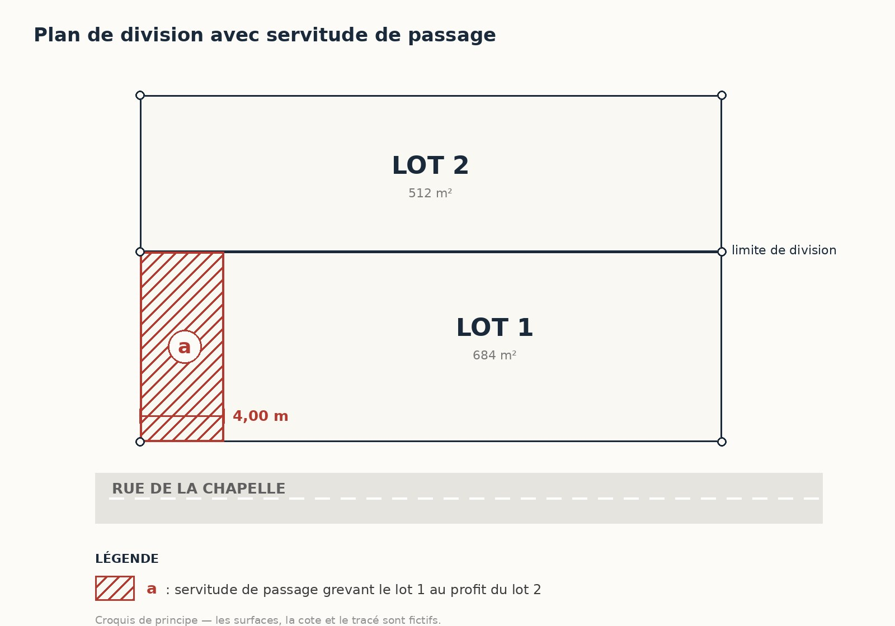

Une charge entre deux propriétés
La servitude ne lie pas deux personnes, elle lie deux terrains. Elle suit la propriété quand elle se vend, et reste opposable au nouvel acquéreur dès lors que les conditions de publicité ou de connaissance sont réunies.
Le fonds servant est celui qui supporte la charge. Le fonds dominant est celui qui en profite. Les deux termes se retrouvent dans tous les actes, et il vaut mieux savoir de quel côté on se trouve.
Les servitudes les plus courantes dans nos dossiers : le passage pour desservir un terrain, le passage de réseaux — eau, électricité, assainissement, télécommunications —, l'écoulement des eaux pluviales, les vues et jours de souffrance, l'appui sur un mur, le surplomb d'une toiture ou d'un balcon.
Beaucoup naissent à l'occasion d'une division : séparer un terrain en deux rend souvent nécessaire la création d'un passage, d'un droit de réseaux ou d'un droit de surplomb. Ces servitudes ne s'établissent pas d'elles-mêmes pour autant : sauf lorsque la loi les impose — et hors le cas de la destination du père de famille, expliqué plus bas —, elles doivent être prévues et écrites dans l'acte.
Le terrain enclavé et le droit de passage
C'est le cas le plus fréquent, et le seul où le passage peut être imposé au voisin.
Un terrain est dit enclavé lorsqu'il n'a sur la voie publique aucune issue, ou une issue insuffisante — insuffisante pour l'exploitation agricole, industrielle ou commerciale de la propriété, ou pour la réalisation d'une opération de construction ou de lotissement. Le seul fait de disposer d'un accès étroit n'écarte donc pas nécessairement l'enclave. Le propriétaire peut alors réclamer un passage sur les terrains voisins, contre une indemnité proportionnée au dommage causé.
Le passage doit être pris du côté le plus court vers la voie publique, et à l'endroit le moins dommageable pour celui qui le supporte. Ces deux critères se contredisent parfois : c'est là que l'analyse de terrain devient nécessaire.
Hors enclave, aucun passage ne s'impose : il résulte alors d'un accord, d'un titre, ou d'une situation ancienne établie.
Code civil, articles 682 à 685-1.
D'où vient une servitude ?
- Par la loiCertaines servitudes s'imposent d'elles-mêmes : le passage en cas d'enclave, l'écoulement naturel des eaux d'un fonds supérieur vers un fonds inférieur, les distances à respecter pour les vues et les plantations.
- Par un titreUn acte notarié la crée et la décrit. C'est la voie la plus sûre, et la seule qui permette de fixer précisément l'assiette, la largeur et les usages autorisés.
- Par prescription trentenaireUn usage paisible, public et continu pendant trente ans peut faire naître une servitude — mais uniquement pour celles qui sont à la fois continues et apparentes. Un simple passage à pied, discontinu par nature, ne s'acquiert pas ainsi.
- Par destination du père de familleLorsqu'un propriétaire unique a organisé une situation entre deux parties de son bien, puis les a séparées, l'aménagement existant peut se transformer en servitude.
Code civil, articles 637 et suivants ; modes d'établissement, articles 690 à 696.
Comment une servitude se représente sur un plan

Qui entretient, qui paie
Deux questions qui empoisonnent le voisinage, et que l'acte devrait avoir tranchées.
Par principe, celui qui bénéficie de la servitude en supporte l'entretien : c'est à lui de faire les travaux nécessaires pour en user, et de maintenir le passage praticable. Lorsque les deux propriétaires l'utilisent, la charge se partage — mais la répartition doit être écrite, sinon elle se discute.
Le propriétaire du fonds servant, de son côté, ne peut rien faire qui diminue l'usage de la servitude ou le rende plus incommode. Il ne peut pas non plus la déplacer à sa guise, sauf si l'assiette initiale lui est devenue plus onéreuse et qu'il en offre une aussi commode.
Et le bénéficiaire ne peut pas aggraver la charge : il doit en user suivant son titre. Un passage consenti pour desservir une maison ne couvre donc pas nécessairement un accès de chantier ou la desserte d'un lotissement. Savoir si l'usage nouveau constitue réellement une aggravation dépend de la rédaction du titre, de l'étendue du droit accordé à l'origine et de la situation concrète — et, en matière d'enclave, la loi vise précisément la construction et le lotissement.
Les questions qu'on nous pose
Mon voisin traverse mon terrain depuis vingt ans. A-t-il acquis un droit ?
Pas automatiquement. La prescription trentenaire suppose trente ans, et elle ne joue que pour les servitudes à la fois continues et apparentes. Un passage, discontinu par nature, ne s'acquiert pas par le seul usage, même prolongé. En revanche, il peut résulter d'un titre ancien que personne n'a relu, ou d'une situation d'enclave. C'est ce que nous vérifions avant de répondre.
Une servitude figure dans mon acte, mais je ne sais pas où elle passe.
C'est très courant : beaucoup d'actes décrivent une servitude par des mots, sans plan ni cote. Nous relevons alors le terrain, confrontons la description aux limites réelles et aux archives, et établissons un plan qui situe l'assiette. Ce plan ne crée pas la servitude — son existence tient au titre, à la loi ou à la prescription — mais il fixe précisément son emprise, sa largeur et son tracé, et il évite que chacun en donne sa propre lecture.
Où retrouve-t-on une servitude dont personne ne se souvient ?
Dans les titres. Les actes constituant une servitude sont publiés au service de la publicité foncière, l'ancienne conservation des hypothèques, et il est possible de demander les renseignements attachés à un immeuble pour remonter la chaîne des propriétaires et retrouver l'acte. Nous confrontons ensuite ce que disent les actes à ce que montre le terrain et à nos archives — les deux ne concordent pas toujours.
Peut-on supprimer une servitude ?
Oui, dans plusieurs cas : par accord entre les deux propriétaires, constaté par acte notarié ; lorsqu'elle devient sans objet, par exemple si l'enclave disparaît, le propriétaire du fonds servant pouvant alors en faire constater l'extinction ; ou après un non-usage prolongé, dans les conditions prévues par le Code civil. Chaque situation s'examine sur pièces.
Une servitude de passage permet-elle de poser une canalisation ?
Cela dépend de l'origine de la servitude, et la réponse n'est pas la même dans les deux cas.
S'il s'agit d'une servitude conventionnelle, tout se lit dans le titre : le droit de passer et le droit d'enfouir un réseau sont distincts, et si l'acte ne prévoit que le passage, la pose de canalisations suppose un accord complémentaire.
S'il s'agit d'un passage légal pour cause d'enclave, la jurisprudence admet en revanche que l'assiette du passage puisse être utilisée pour établir les canalisations nécessaires à la desserte du fonds enclavé. C'est un point que nous vérifions systématiquement lorsqu'une division met en jeu des réseaux.
Les textes applicables
Les servitudes relèvent du Code civil. Voici les articles auxquels renvoient les situations décrites plus haut.
Le propriétaire dont les fonds sont enclavés et qui n'a sur la voie publique aucune issue, ou qu'une issue insuffisante, soit pour l'exploitation agricole, industrielle ou commerciale de sa propriété, soit pour la réalisation d'opérations de construction ou de lotissement, est fondé à réclamer sur les fonds de ses voisins un passage suffisant pour assurer la desserte complète de ses fonds, à charge d'une indemnité proportionnée au dommage qu'il peut occasionner.
Code civil, article 682
- Article 637Définition de la servitude : une charge imposée sur un héritage pour l'usage et l'utilité d'un héritage appartenant à un autre propriétaire.
- Article 682Le droit de passage pour cause d'enclave. L'insuffisance de l'issue s'apprécie au regard de l'exploitation agricole, industrielle ou commerciale du fonds, ou d'une opération de construction ou de lotissement — pas dans l'absolu.
- Article 683Le passage est pris là où le trajet est le plus court vers la voie publique, mais fixé à l'endroit le moins dommageable pour le fonds qui le supporte.
- Article 684Enclave née d'une division : le passage ne peut être demandé que sur les terrains issus de la vente, de l'échange, du partage ou du contrat en cause. Le second alinéa réserve le cas où aucun passage suffisant ne peut y être établi : l'article 682 redevient alors applicable.
- Article 685L'assiette et le mode du passage pour cause d'enclave sont déterminés par trente ans d'usage continu.
- Article 685-1Cessation de l'enclave : le propriétaire du fonds servant peut à tout moment invoquer l'extinction de la servitude si la desserte du fonds dominant est assurée dans les conditions de l'article 682. À défaut d'accord amiable, la disparition est constatée par une décision de justice.
- Articles 690 à 696Les modes d'établissement des servitudes : titre, prescription trentenaire pour les seules servitudes continues et apparentes, destination du père de famille.
- Article 700Division du fonds dominant : la servitude reste due pour chaque portion issue de la division, sans que la condition du fonds servant en soit aggravée.
- Articles 701 et 702Le propriétaire du fonds servant ne peut rien faire qui diminue l'usage de la servitude ; le bénéficiaire ne peut en user que suivant son titre, sans aggraver la condition du fonds servant.
- Articles 703 à 710L'extinction des servitudes, notamment par impossibilité d'usage, réunion des deux fonds entre les mêmes mains, ou non-usage trentenaire.
- Décret n° 55-22 du 4 janvier 1955, articles 28 et 30La publicité foncière. Les actes constituant une servitude sont publiés au service de la publicité foncière ; à défaut de publication — ou de mention dans le titre de l'acquéreur —, la servitude conventionnelle n'est pas opposable à celui qui achète le fonds grevé.
Une servitude à définir ou à faire préciser ?
Le cabinet intervient à Mantes-la-Jolie, à Limay et dans toute la vallée de la Seine. Apportez-nous votre acte : nous vous dirons ce qu'il dit réellement, et ce qu'il faut relever sur le terrain pour lever les ambiguïtés.
Sources : Code civil, articles 637 et suivants (servitudes), 682 à 685-1 (droit de passage en cas d'enclave), 690 à 696 (modes d'établissement), 700 (division du fonds dominant), 701 et 702 (exercice de la servitude), 703 à 710 (extinction) ; décret n° 55-22 du 4 janvier 1955 portant réforme de la publicité foncière, articles 28 et 30 ; Service-Public.fr, fiche F2040 « Droit de passage sur le terrain d'un autre propriétaire ». Ces éléments sont donnés à titre d'information générale et ne remplacent pas l'examen de votre dossier.